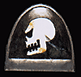
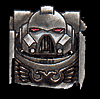

Imperial Forces |
Force Disposition Introduction |
Ork Forces |

On its initial founding, this Chapter was known as the Fire Claws and fought primarily in warzones surrounding the Eye of Terror, fighting alongside companies of the Cadian Regiment. When the Emperor's Tarot revealed the existence of a badly damaged space hulk emerging from the warp near the Forge World of Stygies in Segmentum Obscurus, the Fire Claws mobilised to intercept it. The hulk, codified as the Captor of Sin, contained a renegade warband led by a Tzeentchian Chaos Champion known as the Excoriator. The Space Marine strike cruisers crippled the vessel as it entered the Stygies System and Terminator Assault Squads led by Librarian Decario and the shadowy figure of Inquisitor De Marche stormed the vessel. Realising they were doomed, the renegades made their stand in a cavern sized engine room where furious battle was joined and Decario and De Marche fought the Excoriator.
The Champion was a mighty warrior and carried a weapon forged in the heart of the Eye of Terror, a terrible Daemon sword, with the essence of a greater daemon bound within its steel. The Inquisitor hacked at the Champion with his power axe, but the unnatural armour of the Excoriator was impervious to his blows. The Chaos champion retaliated, his daemon weapon easily cutting through De Marche's armour and grievously wounding him. With one strike, the Excoriator shattered Decario's force sword and laid open his Terminator armour. Decario staggered, but struck back with his power fist, ripping the Chaos Champion's sword arm from its socket in a welter of blood.
|
| ||||||||||||||||||||||||||||||||||||||||||||||||||||||||
|
Even mortally wounded and unarmed, the champion fought with hideous ferocity, smashing the Librarian to the ground and slaughtering four Terminators. Decario muttered a prayer to the Emperor, grabbed the nearest weapon to hand and struck out at the Champion. The Excoriator's head was chopped from his shoulders and Decario realised he had picked up the daemon sword, killing the champion with his own weapon.
 Decario was filled with a sense of utter purpose as he wielded the Chaos sword, and instinctively felt that this was a weapon that could be turned against the forces of Chaos. The wounded De Marche cautioned the Librarian to put the weapon down, that only he was trained to handle such artefacts. The Librarian handed the Inquisitor the weapon and the Space Marines returned to their ship, leaaving behind an Adeptus Mechanicus survey team to search the hulk for the reamains of any archaeotech. De Marche explained that he also believed that such weapons could be used to fight Chaos and should not be destroyed out of hand as was current policy. With the aid of Decario, he was able to convince the Fire Claw's Chapter Master of this and under De Marche's guidance, the Fire Claws embarked on a crusade to explore the worlds around the Eye of Terror and uncover more such relics. Over the decades that followed, many such artefacts were discovered and the Fire Claws Chapter became known as the Relictors.  However, it was only a matter of time before the practice of the Relictors using Chaos weapons in battle became known to others. A cell of Inquisitors, backed up by no less than four Chapters of Space Marines and an Emperor class battleship descended upon the Relictor's fortress monastery and demanded they hand over De Marche and all recovered Chaos artefacts or be destroyed. Faced with destruction the Chapter had no choice but to obey. As penance for dealing with heretical weaponry the Chapter was despatched on a century long penance crusade. De Marche was taken by the Inquisitors and executed as a heretic. As part of their crusade, the Chapter has deployed all ten companies to Armageddon, with a greater concentration of forces in the Equatorial Jungle, particularly in the region surrounding Angron's Monolith. | |||||||||||||||||||||||||||||||||||||||||||||||||||||||||